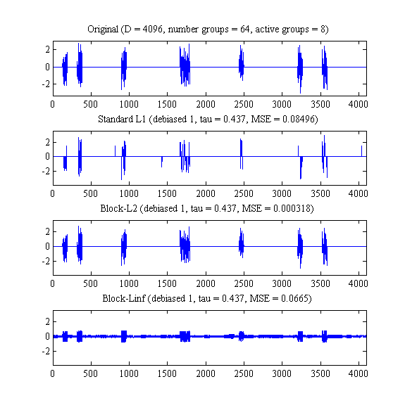
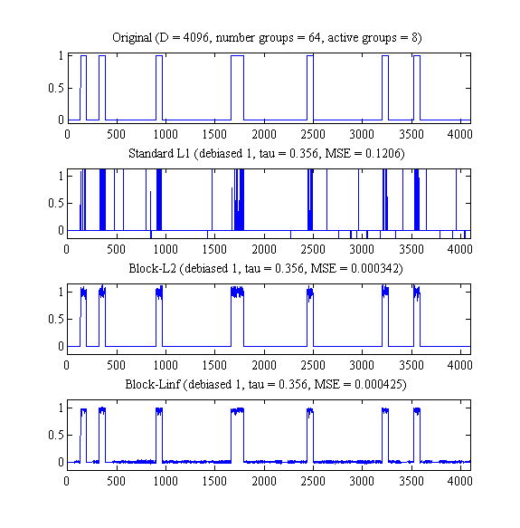

for signal_type = 0:1
setSeed(1);
n = 2^12;
k = 2^10;
n_active = 8;
n_groups = 64;
size_groups = n / n_groups;
raux = randperm(n_groups);
actives = raux(1:n_active);
groups = ceil([1:n]'/size_groups);
f = zeros(n,1);
if signal_type==0
for i=1:n_active
f(find(groups==actives(i))) = ...
randn(size(f(find(groups==actives(i)))));
end
else
for i=1:n_active
f(find(groups==actives(i))) = ...
ones(size(f(find(groups==actives(i)))));
end
end
R = randn(k,n);
R = orth(R')';
hR = @(x) R*x;
hRt = @(x) R'*x;
sigma = 0.02;
y = hR(f) + sigma*randn(k,1);
tau = 0.1*max(abs(R'*y));
psi = @(x,tau) group_vector_soft(x,tau,groups);
phi = @(x) group_l2norm(x,groups);
L12_tau = tau*5;
[x_L12_biased, x_L12_debiased]= ...
SpaRSA(y,hR, L12_tau,...
'Psi',psi,...
'Phi',phi,...
'Monotone',1,...
'Debias',1,...
'AT',hRt,...
'Initialization',0,...
'StopCriterion',1,...
'ToleranceA',0.0001, ...
'MaxiterA',100);
psi = @(x,tau) group_L2_Linf_shrink(x,tau,groups);
phi = @(x) group_linf_norm(x,groups);
Linf_tau = tau*5;
[x_Linf_biased, x_Linf_debiased]= ...
SpaRSA(y,hR, Linf_tau,...
'Psi',psi,...
'Phi',phi,...
'Monotone',1,...
'Debias',1,...
'AT',hRt,...
'Initialization',0,...
'StopCriterion',1,...
'ToleranceA',0.001, ...
'MaxiterA',1000);
L1_tau = tau*5;
[x_L1_biased, x_L1_debiased]= ...
SpaRSA(y, hR, L1_tau,...
'Debias',1,...
'AT',hRt,...
'True_x',f,...
'Monotone',1,...
'Initialization',0,...
'StopCriterion',3,...
'ToleranceA',0.01,...
'ToleranceD',0.0001);
for debiased=1:1
if debiased
x_L1 = x_L1_debiased;
x_L12 = x_L12_debiased;
x_Linf = x_Linf_debiased;
else
x_L1 = x_L1_biased;
x_L12 = x_L12_biased;
x_Linf = x_Linf_biased;
end
nr = 4; nc = 1;
figure
scrsz = get(0,'ScreenSize');
set(gcf,'Position',[10 scrsz(4)*0.1 0.9*scrsz(3)/2 3*scrsz(4)/4])
subplot(nr,nc,1)
plot(f,'LineWidth',1.1)
top = max(f(:));
bottom = min(f(:));
v = [0 n+1 bottom-0.05*(top-bottom) top+0.05*((top-bottom))];
set(gca,'FontName','Times')
set(gca,'FontSize',14)
title(sprintf('Original (D = %g, number groups = %g, active groups = %g)',...
n,n_groups,n_active))
axis(v);
subplot(nr, nc, 2)
plot(x_L1,'LineWidth',1.1)
set(gca,'FontName','Times')
set(gca,'FontSize',14)
top = max(f(:));
bottom = min(f(:));
v = [0 n+1 bottom-0.15*(top-bottom) top+0.15*((top-bottom))];
axis(v)
title(sprintf(...
'Standard L1 (debiased %d, tau = %5.3g, MSE = %0.4g)',...
debiased, L1_tau, (1/n)*norm(x_L1-f)^2));
subplot(nr, nc, 3)
plot(x_L12,'LineWidth',1.1)
set(gca,'FontName','Times')
set(gca,'FontSize',14)
axis(v)
title(sprintf('Block-L2 (debiased %d, tau = %5.3g, MSE = %5.3g)',...
debiased, L12_tau, (1/n)*norm(x_L12-f)^2));
subplot(nr, nc, 4)
plot(x_Linf,'LineWidth',1.1)
set(gca,'FontName','Times')
set(gca,'FontSize',14)
axis(v)
title(sprintf('Block-Linf (debiased %d, tau = %5.3g, MSE = %5.3g)',...
debiased, Linf_tau, (1/n)*norm(x_Linf-f)^2));
drawnow
end
end
Regularization parameter tau = 4.367533e-01
Initial obj=6.681903e+01, alpha=1.00e+00, nonzeros= 0
t= 1, obj=3.243108e+01, alpha=1.000000e+00 Delta obj. = 5.146431e-01 (target = 1.000000e-04)
t= 2, obj=3.168532e+01, alpha=9.885825e-01 Delta obj. = 2.299519e-02 (target = 1.000000e-04)
f=6.035214e+02, increasing alpha to 2.02e-02
f=1.332195e+02, increasing alpha to 4.04e-02
f=4.000796e+01, increasing alpha to 8.09e-02
t= 3, obj=2.766016e+01, alpha=8.088538e-02 Delta obj. = 1.270352e-01 (target = 1.000000e-04)
f=3.875209e+01, increasing alpha to 1.57e-01
f=2.967654e+01, increasing alpha to 3.14e-01
t= 4, obj=2.640544e+01, alpha=3.137364e-01 Delta obj. = 4.536209e-02 (target = 1.000000e-04)
t= 5, obj=2.533659e+01, alpha=5.647731e-01 Delta obj. = 4.047851e-02 (target = 1.000000e-04)
t= 6, obj=2.507902e+01, alpha=6.160655e-01 Delta obj. = 1.016579e-02 (target = 1.000000e-04)
t= 7, obj=2.463756e+01, alpha=1.184839e-01 Delta obj. = 1.760286e-02 (target = 1.000000e-04)
f=2.495147e+01, increasing alpha to 2.29e-01
t= 8, obj=2.456305e+01, alpha=2.290179e-01 Delta obj. = 3.024191e-03 (target = 1.000000e-04)
t= 9, obj=2.447726e+01, alpha=4.314139e-01 Delta obj. = 3.492613e-03 (target = 1.000000e-04)
t= 10, obj=2.446717e+01, alpha=4.691975e-01 Delta obj. = 4.122811e-04 (target = 1.000000e-04)
t= 11, obj=2.446198e+01, alpha=2.801214e-01 Delta obj. = 2.121286e-04 (target = 1.000000e-04)
t= 12, obj=2.445926e+01, alpha=1.136942e-01 Delta obj. = 1.110308e-04 (target = 1.000000e-04)
f=2.446124e+01, increasing alpha to 2.00e-01
f=2.445928e+01, increasing alpha to 4.00e-01
t= 13, obj=2.445880e+01, alpha=4.002928e-01 Delta obj. = 1.905480e-05 (target = 1.000000e-04)
Finished the main algorithm! Results:
Number of iterations = 14
0.5*||A x - y ||_2^2 = 3.747e+00
tau * Penalty = 2.071e+01
Objective function = 2.446e+01
Number of non-zero components = 512
CPU time so far = 8.300e-01
Starting the debiasing phase...
t = 15, debias resid = 2.39111118e+00, convergence = 2.214e+03
t = 16, debias resid = 1.05772738e+00, convergence = 6.987e+02
t = 17, debias resid = 5.67733387e-01, convergence = 3.006e+02
t = 18, debias resid = 3.66715126e-01, convergence = 1.231e+02
t = 19, debias resid = 2.80904494e-01, convergence = 5.049e+01
t = 20, debias resid = 2.42171209e-01, convergence = 2.646e+01
t = 21, debias resid = 2.24786132e-01, convergence = 1.011e+01
t = 22, debias resid = 2.17170725e-01, convergence = 4.969e+00
t = 23, debias resid = 2.13783658e-01, convergence = 1.871e+00
t = 24, debias resid = 2.12478360e-01, convergence = 7.546e-01
Finished the debiasing phase! Results:
Final number of iterations = 24
0.5*||A x - y ||_2 = 1.062e-01
tau * penalty = 2.071e+01
Objective function = 2.446e+01
Number of non-zero components = 512
CPU time so far = 1.210e+00
Regularization parameter tau = 4.367533e-01
Initial obj=6.681903e+01, alpha=1.00e+00, nonzeros= 0
t= 1, obj=8.813602e+00, alpha=1.000000e+00 Delta obj. = 8.680974e-01 (target = 1.000000e-03)
t= 2, obj=8.035855e+00, alpha=9.863129e-01 Delta obj. = 8.824391e-02 (target = 1.000000e-03)
t= 3, obj=7.305217e+00, alpha=1.725166e-01 Delta obj. = 9.092227e-02 (target = 1.000000e-03)
f=8.760435e+00, increasing alpha to 4.35e-01
t= 4, obj=6.963893e+00, alpha=4.354166e-01 Delta obj. = 4.672331e-02 (target = 1.000000e-03)
t= 5, obj=6.642704e+00, alpha=6.951242e-01 Delta obj. = 4.612211e-02 (target = 1.000000e-03)
t= 6, obj=6.560328e+00, alpha=7.638075e-01 Delta obj. = 1.240090e-02 (target = 1.000000e-03)
t= 7, obj=6.439924e+00, alpha=3.302814e-01 Delta obj. = 1.835334e-02 (target = 1.000000e-03)
t= 8, obj=6.420161e+00, alpha=6.058153e-02 Delta obj. = 3.068888e-03 (target = 1.000000e-03)
f=1.437689e+01, increasing alpha to 2.62e-01
f=7.525382e+00, increasing alpha to 5.24e-01
t= 9, obj=6.232300e+00, alpha=5.236436e-01 Delta obj. = 2.926110e-02 (target = 1.000000e-03)
t= 10, obj=6.082341e+00, alpha=8.389847e-01 Delta obj. = 2.406150e-02 (target = 1.000000e-03)
t= 11, obj=6.063807e+00, alpha=8.669371e-01 Delta obj. = 3.047230e-03 (target = 1.000000e-03)
t= 12, obj=6.007536e+00, alpha=1.947894e-01 Delta obj. = 9.279743e-03 (target = 1.000000e-03)
f=6.013695e+00, increasing alpha to 7.86e-02
t= 13, obj=5.945082e+00, alpha=7.860367e-02 Delta obj. = 1.039600e-02 (target = 1.000000e-03)
f=7.375706e+00, increasing alpha to 1.51e-01
f=6.220343e+00, increasing alpha to 3.01e-01
f=5.945312e+00, increasing alpha to 6.03e-01
t= 14, obj=5.906970e+00, alpha=6.027339e-01 Delta obj. = 6.410709e-03 (target = 1.000000e-03)
t= 15, obj=5.894698e+00, alpha=6.113783e-01 Delta obj. = 2.077526e-03 (target = 1.000000e-03)
t= 16, obj=5.876287e+00, alpha=2.794468e-01 Delta obj. = 3.123258e-03 (target = 1.000000e-03)
f=5.897333e+00, increasing alpha to 1.44e-01
t= 17, obj=5.860710e+00, alpha=1.437888e-01 Delta obj. = 2.650783e-03 (target = 1.000000e-03)
f=5.991743e+00, increasing alpha to 3.66e-01
t= 18, obj=5.855959e+00, alpha=3.662543e-01 Delta obj. = 8.107969e-04 (target = 1.000000e-03)
Finished the main algorithm! Results:
Number of iterations = 19
0.5*||A x - y ||_2^2 = 2.881e-01
tau * Penalty = 5.568e+00
Objective function = 5.856e+00
Number of non-zero components = 4096
CPU time so far = 1.490e+00
Starting the debiasing phase...
t = 20, debias resid = 5.92391463e-29, convergence = 1.034e-24
Finished the debiasing phase! Results:
Final number of iterations = 20
0.5*||A x - y ||_2 = 2.962e-29
tau * penalty = 5.568e+00
Objective function = 5.856e+00
Number of non-zero components = 4096
CPU time so far = 1.560e+00
Regularization parameter tau = 4.367533e-01
Initial obj=6.681903e+01, alpha=1.00e+00, nonzeros= 0
t= 1, obj=6.535320e+01, alpha=1.000000e+00 LCP = 4.367533e+05 (target = 1.000000e-02)
t= 2, obj=6.396879e+01, alpha=3.172106e-01 LCP = 7.097347e-01 (target = 1.000000e-02)
t= 3, obj=6.386984e+01, alpha=2.966369e-01 LCP = 4.473444e-02 (target = 1.000000e-02)
t= 4, obj=6.385823e+01, alpha=2.237234e-01 LCP = 1.378522e-02 (target = 1.000000e-02)
t= 5, obj=6.385740e+01, alpha=2.106613e-01 LCP = 4.550635e-03 (target = 1.000000e-02)
Finished the main algorithm! Results:
Number of iterations = 6
0.5*||A x - y ||_2^2 = 5.096e+01
tau * Penalty = 1.289e+01
Objective function = 6.386e+01
Number of non-zero components = 69
CPU time so far = 2.900e-01
Starting the debiasing phase...
t = 7, debias resid = 5.89798765e+01, convergence = 2.492e+02
t = 8, debias resid = 5.76728731e+01, convergence = 1.390e+01
t = 9, debias resid = 5.75920240e+01, convergence = 7.879e-01
Finished the debiasing phase! Results:
Final number of iterations = 9
0.5*||A x - y ||_2 = 2.880e+01
tau * penalty = 1.289e+01
Objective function = 6.386e+01
Number of non-zero components = 69
CPU time so far = 4.000e-01
Regularization parameter tau = 3.555822e-01
Initial obj=6.171542e+01, alpha=1.00e+00, nonzeros= 0
t= 1, obj=2.621318e+01, alpha=1.000000e+00 Delta obj. = 5.752572e-01 (target = 1.000000e-04)
t= 2, obj=2.574008e+01, alpha=9.930376e-01 Delta obj. = 1.804830e-02 (target = 1.000000e-04)
f=7.926475e+02, increasing alpha to 1.42e-02
f=1.699386e+02, increasing alpha to 2.84e-02
f=4.264264e+01, increasing alpha to 5.67e-02
t= 3, obj=2.372469e+01, alpha=5.671774e-02 Delta obj. = 7.829776e-02 (target = 1.000000e-04)
f=5.820785e+01, increasing alpha to 1.69e-01
f=3.151291e+01, increasing alpha to 3.39e-01
t= 4, obj=2.277337e+01, alpha=3.388508e-01 Delta obj. = 4.009844e-02 (target = 1.000000e-04)
t= 5, obj=2.076504e+01, alpha=6.967718e-01 Delta obj. = 8.818762e-02 (target = 1.000000e-04)
t= 6, obj=2.060880e+01, alpha=8.563209e-01 Delta obj. = 7.524181e-03 (target = 1.000000e-04)
t= 7, obj=2.035689e+01, alpha=2.881484e-01 Delta obj. = 1.222350e-02 (target = 1.000000e-04)
f=2.137369e+01, increasing alpha to 5.89e-02
t= 8, obj=2.002428e+01, alpha=5.888162e-02 Delta obj. = 1.633889e-02 (target = 1.000000e-04)
f=2.129450e+01, increasing alpha to 1.33e-01
f=2.016671e+01, increasing alpha to 2.67e-01
t= 9, obj=1.990454e+01, alpha=2.668251e-01 Delta obj. = 5.979532e-03 (target = 1.000000e-04)
t= 10, obj=1.987111e+01, alpha=3.673923e-01 Delta obj. = 1.679752e-03 (target = 1.000000e-04)
t= 11, obj=1.986457e+01, alpha=4.333060e-01 Delta obj. = 3.287443e-04 (target = 1.000000e-04)
t= 12, obj=1.986190e+01, alpha=3.469221e-01 Delta obj. = 1.348232e-04 (target = 1.000000e-04)
t= 13, obj=1.985972e+01, alpha=1.268875e-01 Delta obj. = 1.096894e-04 (target = 1.000000e-04)
f=1.986117e+01, increasing alpha to 1.82e-01
t= 14, obj=1.985970e+01, alpha=1.817731e-01 Delta obj. = 6.858040e-07 (target = 1.000000e-04)
Finished the main algorithm! Results:
Number of iterations = 15
0.5*||A x - y ||_2^2 = 2.680e+00
tau * Penalty = 1.718e+01
Objective function = 1.986e+01
Number of non-zero components = 512
CPU time so far = 7.900e-01
Starting the debiasing phase...
t = 16, debias resid = 1.80090825e+00, convergence = 2.479e+03
t = 17, debias resid = 8.03518263e-01, convergence = 8.264e+02
t = 18, debias resid = 4.42158662e-01, convergence = 3.213e+02
t = 19, debias resid = 2.99596214e-01, convergence = 1.298e+02
t = 20, debias resid = 2.41701168e-01, convergence = 5.314e+01
t = 21, debias resid = 2.18831651e-01, convergence = 2.209e+01
t = 22, debias resid = 2.08664684e-01, convergence = 9.828e+00
t = 23, debias resid = 2.04102157e-01, convergence = 4.146e+00
t = 24, debias resid = 2.02144269e-01, convergence = 1.631e+00
t = 25, debias resid = 2.01442520e-01, convergence = 6.375e-01
Finished the debiasing phase! Results:
Final number of iterations = 25
0.5*||A x - y ||_2 = 1.007e-01
tau * penalty = 1.718e+01
Objective function = 1.986e+01
Number of non-zero components = 512
CPU time so far = 1.140e+00
Regularization parameter tau = 3.555822e-01
Initial obj=6.171542e+01, alpha=1.00e+00, nonzeros= 0
t= 1, obj=6.747939e+00, alpha=1.000000e+00 Delta obj. = 8.906604e-01 (target = 1.000000e-03)
t= 2, obj=6.172072e+00, alpha=9.892558e-01 Delta obj. = 8.533956e-02 (target = 1.000000e-03)
t= 3, obj=5.527588e+00, alpha=1.722950e-01 Delta obj. = 1.044195e-01 (target = 1.000000e-03)
f=6.972359e+00, increasing alpha to 3.91e-01
t= 4, obj=5.340612e+00, alpha=3.912692e-01 Delta obj. = 3.382582e-02 (target = 1.000000e-03)
t= 5, obj=5.001077e+00, alpha=6.854429e-01 Delta obj. = 6.357606e-02 (target = 1.000000e-03)
t= 6, obj=4.919423e+00, alpha=7.755396e-01 Delta obj. = 1.632728e-02 (target = 1.000000e-03)
t= 7, obj=4.818172e+00, alpha=3.857490e-01 Delta obj. = 2.058193e-02 (target = 1.000000e-03)
t= 8, obj=4.631289e+00, alpha=5.896393e-02 Delta obj. = 3.878718e-02 (target = 1.000000e-03)
f=2.177425e+01, increasing alpha to 1.56e-01
f=7.980230e+00, increasing alpha to 3.12e-01
f=4.946804e+00, increasing alpha to 6.25e-01
t= 9, obj=4.438460e+00, alpha=6.249653e-01 Delta obj. = 4.163612e-02 (target = 1.000000e-03)
t= 10, obj=4.376132e+00, alpha=8.115735e-01 Delta obj. = 1.404278e-02 (target = 1.000000e-03)
t= 11, obj=4.347329e+00, alpha=6.902482e-01 Delta obj. = 6.581768e-03 (target = 1.000000e-03)
t= 12, obj=4.201846e+00, alpha=1.005577e-01 Delta obj. = 3.346497e-02 (target = 1.000000e-03)
f=8.149634e+00, increasing alpha to 5.46e-02
f=4.997363e+00, increasing alpha to 1.09e-01
f=4.293575e+00, increasing alpha to 2.18e-01
t= 13, obj=4.168258e+00, alpha=2.182541e-01 Delta obj. = 7.993445e-03 (target = 1.000000e-03)
f=4.195359e+00, increasing alpha to 6.18e-01
t= 14, obj=4.114664e+00, alpha=6.176938e-01 Delta obj. = 1.285784e-02 (target = 1.000000e-03)
t= 15, obj=4.090693e+00, alpha=7.072729e-01 Delta obj. = 5.825617e-03 (target = 1.000000e-03)
t= 16, obj=4.058737e+00, alpha=3.935209e-01 Delta obj. = 7.811867e-03 (target = 1.000000e-03)
t= 17, obj=4.000860e+00, alpha=4.500327e-02 Delta obj. = 1.425982e-02 (target = 1.000000e-03)
f=1.397362e+01, increasing alpha to 1.45e-01
f=6.943547e+00, increasing alpha to 2.91e-01
f=4.369043e+00, increasing alpha to 5.81e-01
t= 18, obj=3.825629e+00, alpha=5.811314e-01 Delta obj. = 4.379847e-02 (target = 1.000000e-03)
t= 19, obj=3.773746e+00, alpha=8.155637e-01 Delta obj. = 1.356187e-02 (target = 1.000000e-03)
t= 20, obj=3.758713e+00, alpha=7.519855e-01 Delta obj. = 3.983709e-03 (target = 1.000000e-03)
t= 21, obj=3.575380e+00, alpha=5.081958e-02 Delta obj. = 4.877536e-02 (target = 1.000000e-03)
f=4.889646e+00, increasing alpha to 2.19e-02
f=5.463904e+00, increasing alpha to 4.37e-02
f=4.690926e+00, increasing alpha to 8.75e-02
f=3.894839e+00, increasing alpha to 1.75e-01
f=3.603621e+00, increasing alpha to 3.50e-01
t= 22, obj=3.547983e+00, alpha=3.499164e-01 Delta obj. = 7.662667e-03 (target = 1.000000e-03)
t= 23, obj=3.524451e+00, alpha=4.338776e-01 Delta obj. = 6.632521e-03 (target = 1.000000e-03)
t= 24, obj=3.499928e+00, alpha=5.710312e-01 Delta obj. = 6.957840e-03 (target = 1.000000e-03)
t= 25, obj=3.481663e+00, alpha=5.577532e-01 Delta obj. = 5.218844e-03 (target = 1.000000e-03)
t= 26, obj=3.449136e+00, alpha=2.597575e-01 Delta obj. = 9.342443e-03 (target = 1.000000e-03)
f=3.571987e+00, increasing alpha to 1.72e-01
t= 27, obj=3.439330e+00, alpha=1.718840e-01 Delta obj. = 2.843027e-03 (target = 1.000000e-03)
f=3.488181e+00, increasing alpha to 6.05e-01
t= 28, obj=3.386553e+00, alpha=6.045071e-01 Delta obj. = 1.534512e-02 (target = 1.000000e-03)
t= 29, obj=3.369024e+00, alpha=7.487932e-01 Delta obj. = 5.176102e-03 (target = 1.000000e-03)
t= 30, obj=3.350431e+00, alpha=4.593826e-01 Delta obj. = 5.518800e-03 (target = 1.000000e-03)
t= 31, obj=3.238358e+00, alpha=1.808530e-02 Delta obj. = 3.345011e-02 (target = 1.000000e-03)
f=2.137156e+01, increasing alpha to 5.55e-02
f=7.539515e+00, increasing alpha to 1.11e-01
f=4.133504e+00, increasing alpha to 2.22e-01
f=3.276481e+00, increasing alpha to 4.44e-01
t= 32, obj=3.038903e+00, alpha=4.436605e-01 Delta obj. = 6.159162e-02 (target = 1.000000e-03)
t= 33, obj=2.986354e+00, alpha=6.778403e-01 Delta obj. = 1.729193e-02 (target = 1.000000e-03)
t= 34, obj=2.979051e+00, alpha=7.824095e-01 Delta obj. = 2.445439e-03 (target = 1.000000e-03)
t= 35, obj=2.974906e+00, alpha=4.987290e-01 Delta obj. = 1.391300e-03 (target = 1.000000e-03)
t= 36, obj=2.967755e+00, alpha=1.167245e-01 Delta obj. = 2.403967e-03 (target = 1.000000e-03)
f=2.979166e+00, increasing alpha to 1.53e-01
f=2.968245e+00, increasing alpha to 3.07e-01
t= 37, obj=2.966558e+00, alpha=3.068027e-01 Delta obj. = 4.034067e-04 (target = 1.000000e-03)
Finished the main algorithm! Results:
Number of iterations = 38
0.5*||A x - y ||_2^2 = 1.015e-01
tau * Penalty = 2.865e+00
Objective function = 2.967e+00
Number of non-zero components = 3712
CPU time so far = 3.100e+00
Starting the debiasing phase...
t = 39, debias resid = 4.15155724e-03, convergence = 1.488e+02
t = 40, debias resid = 1.33943151e-04, convergence = 4.795e+00
t = 41, debias resid = 4.94935067e-06, convergence = 1.723e-01
Finished the debiasing phase! Results:
Final number of iterations = 41
0.5*||A x - y ||_2 = 2.475e-06
tau * penalty = 2.865e+00
Objective function = 2.967e+00
Number of non-zero components = 3712
CPU time so far = 3.220e+00
Regularization parameter tau = 3.555822e-01
Initial obj=6.171542e+01, alpha=1.00e+00, nonzeros= 0
t= 1, obj=6.040871e+01, alpha=1.000000e+00 LCP = 3.555822e+05 (target = 1.000000e-02)
t= 2, obj=5.949668e+01, alpha=3.833008e-01 LCP = 6.622214e-01 (target = 1.000000e-02)
t= 3, obj=5.940280e+01, alpha=3.443213e-01 LCP = 5.547402e-02 (target = 1.000000e-02)
t= 4, obj=5.938566e+01, alpha=2.203140e-01 LCP = 2.297974e-02 (target = 1.000000e-02)
t= 5, obj=5.938444e+01, alpha=2.053409e-01 LCP = 5.765108e-03 (target = 1.000000e-02)
Finished the main algorithm! Results:
Number of iterations = 6
0.5*||A x - y ||_2^2 = 4.875e+01
tau * Penalty = 1.063e+01
Objective function = 5.938e+01
Number of non-zero components = 109
CPU time so far = 2.200e-01
Starting the debiasing phase...
t = 7, debias resid = 5.80168262e+01, convergence = 3.191e+02
t = 8, debias resid = 5.62364283e+01, convergence = 2.818e+01
t = 9, debias resid = 5.60690138e+01, convergence = 2.748e+00
t = 10, debias resid = 5.60536961e+01, convergence = 2.189e-01
Finished the debiasing phase! Results:
Final number of iterations = 10
0.5*||A x - y ||_2 = 2.803e+01
tau * penalty = 1.063e+01
Objective function = 5.938e+01
Number of non-zero components = 109
CPU time so far = 3.500e-01
 